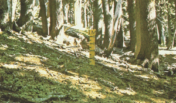
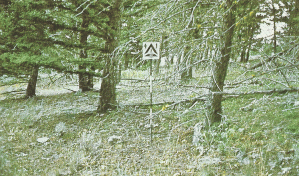
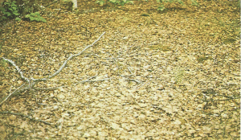

|
|
Fire Behavior Fuel Model 8 -- Short Needle Litter |
Anderson (1982) classifies Fire Behavior Fuel Model 8 in the Timber Group and describes it as follows:
Slow-burning ground fires with low flame lengths are generally the case, although the fire may encounter an occasional "jackpot" or heavy fuel concentration that can flare up. Only under severe weather conditions involving high temperature, low humidites, and high wind do the fuels pose fire hazards. Closed canopy stands of short needle conifers or hardwoods that have leafed out support the fire in the compact litter layer. This layer is mainly needles, leaves, and occasionally twigs because little undergrowth is present in the stand. Representative conifer types are white pine, and lodgepole pine, spruce, fir, and larch.
Anderson's (1982) photographs 22, 23, and 24 are examples of fuels fitting this model.
|  | Anderson (1982) Photo 22, Fire Behavior Fuel Model 8. Surface litter fuels in western hemlock stands of Oregon and Washington, USA. |
|  | Anderson (1982) Photo 23, Fire Behavior Fuel Model 8. Understory of inland Douglas-fir has little fuel here to add to dead-down litter load. |
|  | Anderson (1982) Photo 24, Fire Behavior Fuel Model 8. Closed stand of birch-aspen with leaf litter compacted. |